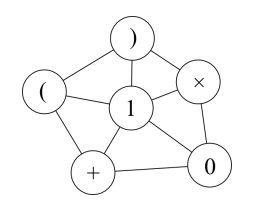

第一行三个整数N,M,K，表示点的数量，边的数量和走的节点数。
第二行一个字符串，表示每个点的符号。
接下来M行，每行两个数，表示一条边连的两个点的编号。
1≤N≤20，0≤M≤N×(N-1)/2，0≤K≤30

6 10 3
)(1*+0
1 2
1 3
1 4
2 3
3 4
2 5
3 5
3 6
4 6
5 6
10
//一共有10条路径，构成的表达式依次是101, (1), 1+1, 1+0, 1*1, 1*0, 0+0,
0+1, 0*0, 0*1